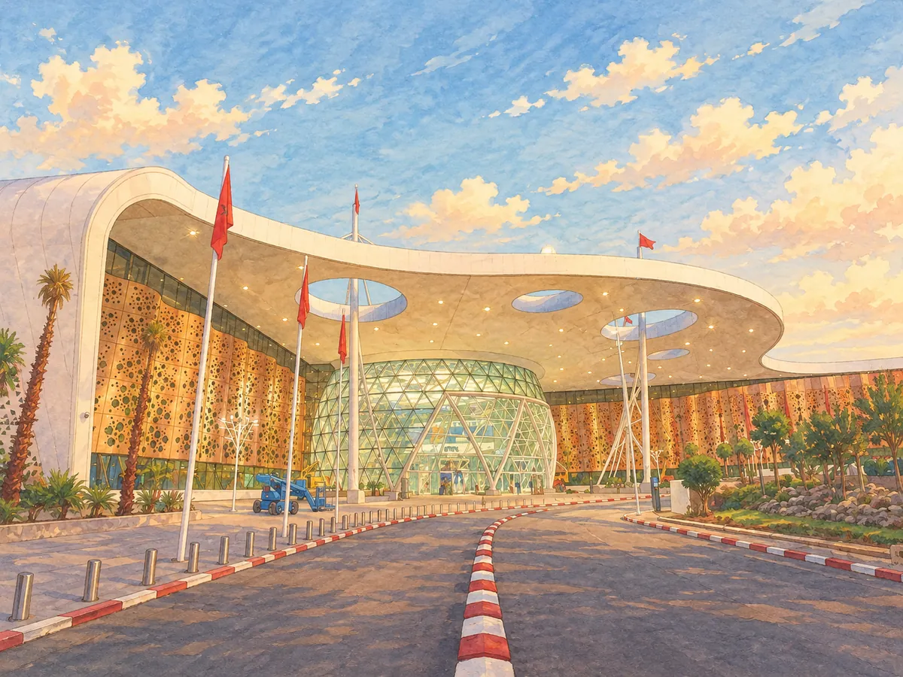
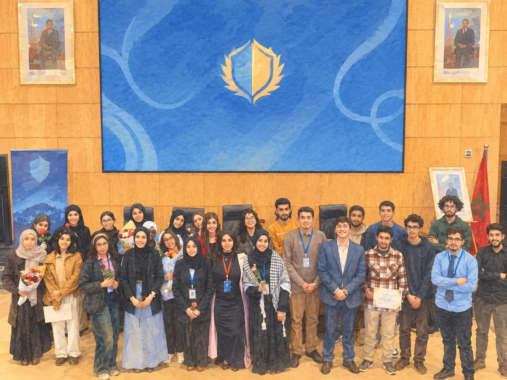
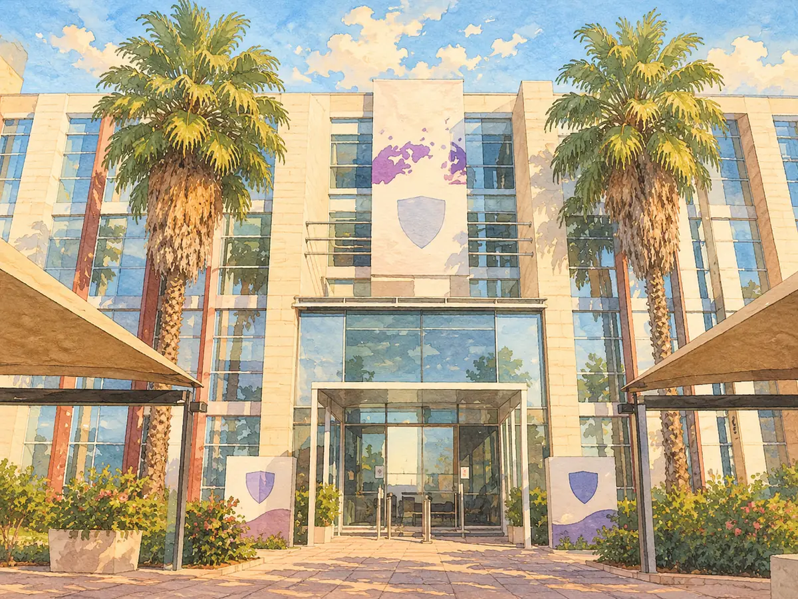

I learn security by building it.
My labs run the same chain a real SOC depends on: segmented networks behind a firewall, a WAF and an IDS in front of exposed services, logs forwarded to a SIEM, and alerts tuned until they are worth an analyst’s time.
On the governance side, I work with ISO/IEC 27001, ISO 27005 and NIST CSF 2.0 to decide which risks and controls matter in the first place.
- Based in
- Rabat, Morocco
- Graduation
- Expected July 2027
- Languages
- Arabic (native), French and English (professional)
My path so far
From school to the SOC, oldest first.
-
Graduating July 2027
ENSA Kénitra: cybersecurity engineering
Networks & Telecommunications Systems (RST), Ibn Tofail University
An engineering degree in Networks & Telecommunications Systems with a cybersecurity specialization. It is where I learned to build security labs step by step, validating each phase before the next.
-

July to August 2025
ONDA, SITA office Marrakech: technical intern
Network Infrastructure & Firewall Security, Office National des Aéroports
I studied the enterprise network infrastructure and firewall security with Fortinet FortiGate, including the IPsec VPN architecture used for secure communications. I simulated network topologies in EVE-NG, ran controlled security tests and wrote the technical documentation.
-

September 2025 to September 2026
CRIS Cybersecurity Club: president
ENSA Kénitra
For a year I led the school’s cybersecurity club. I organized technical workshops and cybersecurity events, including CTF competitions.
-

July to August 2026
DXC Technology Rabat: SOC team
Assistant Engineer Intern (Ingénieur adjoint), Security Department
I built a SOC lab for web threat detection with a ModSecurity WAF, Suricata IDS and Splunk Enterprise SIEM, tested with simulated attacks from Kali Linux. I created and tuned Splunk correlation alerts (WAF bypass, port scan) to reduce false positives, mapped detections to MITRE ATT&CK and built a security monitoring dashboard.
-
From 2027
Next: a PFE in a SOC team
End-of-studies internship, Rabat or Casablanca
I am looking for an end-of-studies internship (PFE) in a SOC team, starting in 2027, in Rabat or Casablanca. I want to put my detection engineering and alert tuning to work on a real environment. Email me if your team has a place.
Skills and certifications
GRC & IT risk
SOC & detection
Automation & response
ICS/OT
Cloud, systems & code
Networking & security
Cisco Networking Academy courses
- CCNA 1 Introduction to Networks
- CCNA 2 Switching, Routing and Wireless Essentials
- CCNA 3 Enterprise Networking, Security and Automation